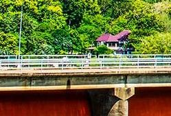

เขื่อนกิ่วลม
เป็นเขื่อนในการดูแลของกรมชลประทาน ตั้งอยู่ห่างจากตัวเมืองลำปางขึ้นไปทางทิศเหนือตามถนนพหลโยธิน ประมาณ 38 กิโลเมตรเศษ แยกซ้ายกิโลเมตรที่ 623 เข้า ไปอีก 14 กิโลเมตร ปิดกั้น แม่น้ำวัง ซึ่งเป็นแควที่มีขนาดเล็กและสั้นที่สุดของแม่น้ำเจ้าพระยา อยู่ในท้องที่จังหวัดลำปางเพียงจังหวัดเดียวเกือบตลอดสาย และไหลลงสู่แม่น้ำปิงในเขตจังหวัดตาก แม่น้ำวังมีพื้นที่ลุ่มน้ำแคบ ประกอบกับมีฝนน้อยกว่าลุ่มน้ำอื่น ๆ ในภาคนี้ แม่น้ำจึงเล็ก แต่น้ำขึ้นและลงในเวลาอันรวดเร็ว กับมีระยะเวลาขาดแคลนน้ำค่อนข้างมาก การทำนาจึงขึ้นอยู่กับฝนเป็นส่วนใหญ่ ทำให้เกษตรกรได้รับความเดือดร้อนเป็นอันมาก และข้าวที่ปลูกได้ก็น้อยจนไม่พอบริโภคในจังหวัด เพื่อเป็นการแก้ไขความเดือดร้อนเกี่ยวกับเรื่องน้ำเพื่อการเพาะปลูกของราษฎรในขั้นแรกนั้น กรมชลประทานได้พิจารณาสร้างโครงการชลประทานแม่วังซึ่งเป็นโครงการประเภททดและส่งน้ำแบบเหมืองฝายขึ้นเป็นโครงการแรกเมื่อ พ.ศ. 2478 ต่อมา เมื่อความต้องการน้ำเพื่อการเพาะปลูกเพิ่มขึ้น กรมชลประทานจึงสร้างเขื่อนเก็บกักน้ำกิ่วลมที่ตำบลบ้านแลง อำเภอเมือง จังหวัดลำปาง เพื่อเก็บกักน้ำบนแม่น้ำวัง และสามารถส่งให้ราษฎรทำการเพาะปลูกได้ตลอดปี เขื่อนกิ่วลมเป็นเขื่อนเก็กน้ำแห่งแรกในภาคเหนือ และเริ่มเก็บน้ำได้ในปี 2515